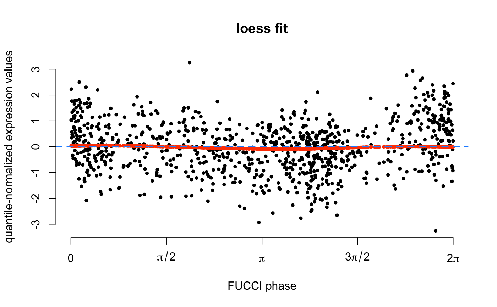

Estimate Cyclic Trends of Expression Values Using Loess
fit_loess(yy, time)
| yy | A vector of gene expression values for a single gene. The expression values are assumed to have been normalized and transformed to standard normal distribution. |
|---|---|
| time | A vector of angles (cell cycle phase). |
A list with two elements: pred.yy, the estimated
cyclic trend; pve, proportion of variance in gene expression
levels explained by the cyclic trend.
library(SingleCellExperiment) data(sce_top101genes) # Select top 10 cyclic genes. sce_top10 <- sce_top101genes[order(rowData(sce_top101genes)$pve_fucci, decreasing=TRUE)[1:10],] coldata <- colData(sce_top10) # Get cell cycle phase based on FUCCI scores. theta <- coldata$theta names(theta) <- rownames(coldata) # Normalize expression counts. sce_top10 <- data_transform_quantile(sce_top10, ncores=2)#>exprs_quant <- assay(sce_top10, "cpm_quantNormed") # Order FUCCI phase and expression. theta_ordered <- theta[order(theta)] yy_ordered <- exprs_quant[1, names(theta_ordered)] fit <- fit_loess(yy_ordered, time=theta_ordered) plot(x=theta_ordered, y=yy_ordered, pch=16, cex=0.7, axes=FALSE, ylab="quantile-normalized expression values", xlab="FUCCI phase", main="loess fit")axis(2)axis(1,at=seq(0,2*pi,pi/2), labels=c(0,expression(pi/2), expression(pi), expression(3*pi/2), expression(2*pi)))